UNO Q User Manual
Learn about the hardware and software features of the Arduino® UNO Q.
Overview
This user manual will guide you through a practical journey covering the most interesting features of the Arduino UNO Q. With this user manual, you will learn how to set up, configure and use this Arduino board.
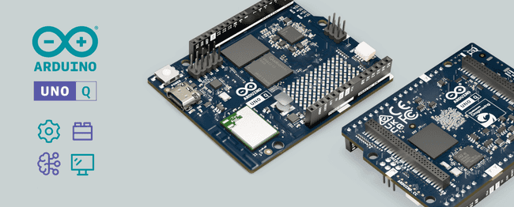
Hardware and Software Requirements
Hardware Requirements
- (1x) UNO Q 2GB or UNO Q 4GB
- USB-C® cable (1x)
- USB-C multiport adapter (dongle) with external power delivery (1x You can use any USB-C dongle with external power delivery capabilities except for Apple ones.
Software Requirements
You can still use the Arduino IDE 2+ to program only the microcontroller (MCU) side of your UNO Q.
Product Overview
The Arduino UNO Q unlocks a new level of performance for the Arduino ecosystem, blending robust computing power from Qualcomm’s advanced QRB2210 Microprocessor (MPU) running a full Debian Linux OS with upstream support, and the real-time responsiveness of a dedicated STM32U585 Microcontroller (MCU) running Arduino sketches over Zephyr OS — all on a single-board computer.
Board Architecture Overview
The Arduino UNO Q blends the high-performance Qualcomm® QRB2210 MPU, running a full Linux environment, with the real-time precision of the STMicroelectronics® STM32U585 (32-bit Arm® Cortex®-M33) MCU, all on a single, compact board. This mixed architecture delivers the power and responsiveness needed for AIoT, machine learning, and advanced automation applications.
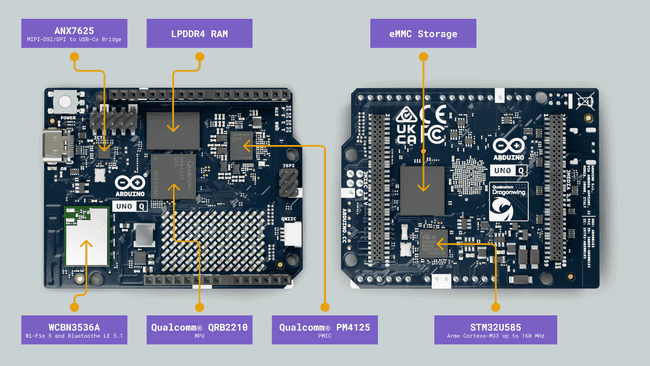
Here is an overview of the board’s main components, as shown in the image above:
- Microprocessor: The Qualcomm® QRB2210 is a quad-core Arm® Cortex®-A53 processor running at 2.0 GHz, equipped with an Adreno™ 702 GPU (845 MHz) for 3D graphics acceleration and dual ISPs supporting up to 25 MP at 30 fps. It runs Debian Linux OS with upstream support, making it well-suited for embedded vision and edge computing applications.
- Microcontroller: The STM32U585 microcontroller features an Arm® Cortex®-M33 core running up to 160 MHz, with 2 MB of flash memory and 786 KB of SRAM. It runs the Zephyr OS, providing a secure and efficient platform for low-power embedded applications.
- Wireless Connectivity: The WCBN3536A radio module provides dual-band Wi-Fi® 5 (2.4/5 GHz) and Bluetooth® 5.1 connectivity, both with onboard antennas for reliable wireless performance.
- Memory: The board features 16 GB or 32 GB options of eMMC storage and 2 GB or 4 GB options of LPDDR4 RAM, delivering fast memory access and reliable storage for embedded applications.
- Multimedia Codec: The ANX7625 multimedia codec enables video and audio output through the onboard USB-C connector, providing a high-speed interface for display and sound transmission in embedded applications.
- Power Management: The UNO Q includes the Qualcomm® PM4145, a power management integrated circuit (PMIC) to meet the demands of always-connected IoT devices.
Pinout
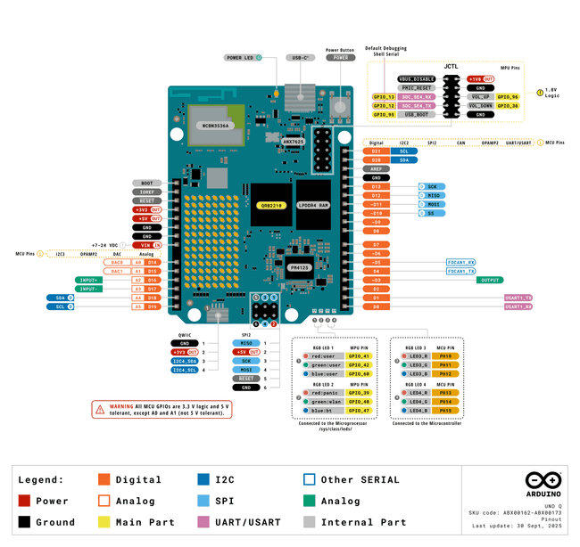
The full pinout is available and downloadable as PDF from the link below:
Datasheet
The complete datasheet is available and downloadable as PDF from the link below:
Schematics
The complete schematics are available and downloadable as PDF from the link below:
STEP Files
The complete STEP files are available and downloadable from the link below:
Form Factor
The Arduino UNO Q features the classic UNO form factor, ensuring compatibility with the wide range of UNO shields developed by us and the community over time.
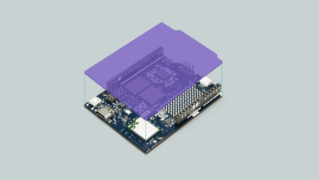
First Use
Powering the Board
The Arduino UNO Q can be powered by:
- A USB-C® cable providing 5 VDC 3 A (not included).
- An external +5 VDC power supply connected to 5V pin.
- An external +7-24 VDC power supply connected to VIN pin.
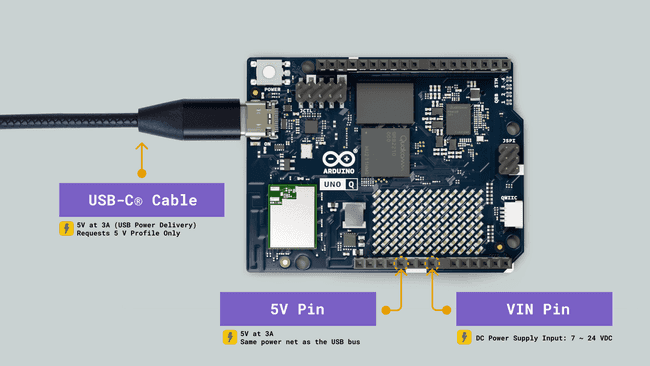
Click here to learn more about the UNO Q power specifications.
Install Arduino App Lab
The Arduino App Lab is a unified development environment that extends the classic Arduino experience into the world of high-performance computing. Arduino App Lab lets you seamlessly combine Arduino sketches, Python scripts, and containerized Linux applications into a single workflow.
With code building blocks called Bricks, preconfigured AI models, and integrated orchestration, it reduces complexity while enabling you to create everything from simple prototypes to advanced, computation-intensive applications.
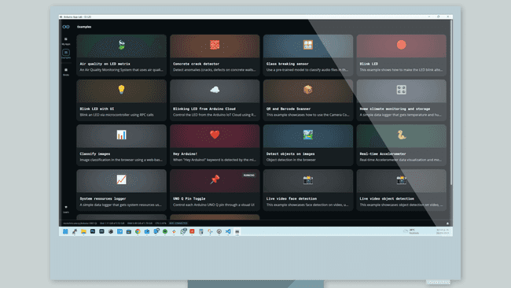
Arduino App Lab comes pre-installed on the UNO Q and can be used in Single-Board Computer (SBC) mode. We highly recommend the 4 GB of RAM UNO Q variant for a better standalone experience.
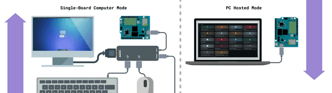
To install it in your personal computer for a PC Hosted setup, go to the software section on our official website, scroll to Arduino App Lab and select your OS’s respective variant.
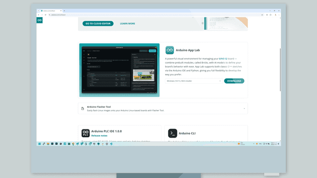
Network Mode
Even when you have set up your Arduino UNO Q as a single-board computer, you can access it remotely from your personal machine by using the Arduino App Lab desktop and the Network Mode. Both modes can be used simultaneously.
- When you open Arduino App Lab, your board will appear with the Network tag if it can be discovered on your local network.
- Click on it and enter the Linux password to log in.
- You will now have access to the board remotely.
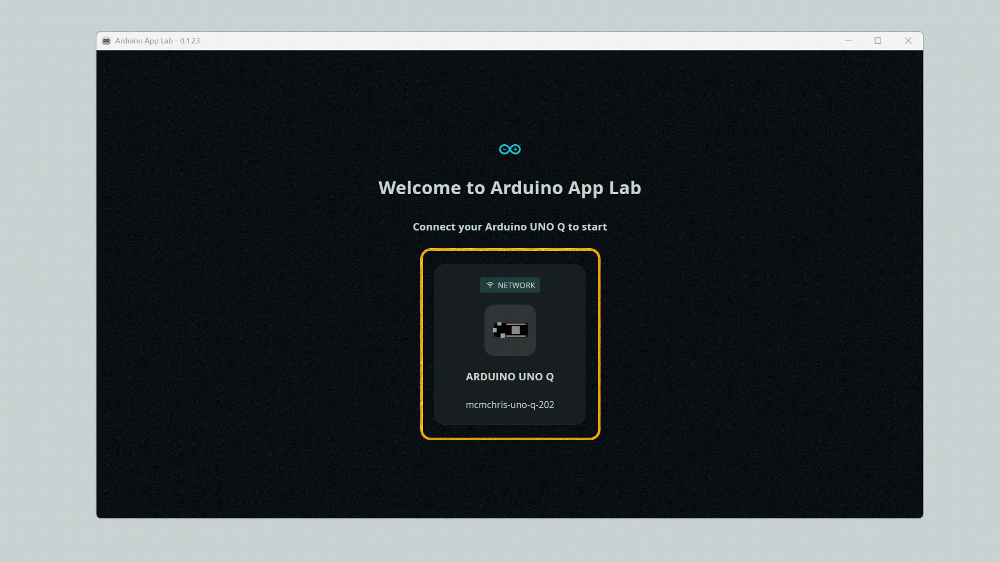
With this method, you can access your UNO Q from any machine in your local network. This allows you to use Arduino App Lab as if you were connected directly to the board, where you can develop & run Apps in the same way as if it was connected via USB-C®.
Network Mode relies on local network discovery (mDNS) to automatically find boards on the same network. Some network configurations such as guest Wi-Fi, corporate or IoT networks, VPNs, or strict firewall rules may prevent automatic discovery, even if the board is connected to Wi-Fi.
Troubleshooting Discovery Issues
- Windows Users: When launching Arduino App Lab for the first time, you may receive a prompt from Windows Defender (or other security software) regarding
. You must allow this access for the board to be discovered. Note: The prompt may not appear on systems that have already run Arduino IDE at some point.mdns-discovery.exe - Firewall Settings: If the board does not appear, ensure that your firewall allows traffic on UDP port 5353, which is required for mDNS discovery.
Note: Being able to access the board via browser, SSH, or IP address does not guarantee that it will appear in Network Mode. Arduino App Lab uses local network discovery to list boards automatically.
Linux Host Setup (Required for Linux Users)
If you are using the UNO Q from a Linux host machine, you must configure USB device permissions for your user account. Without proper permissions, several operations may fail, resulting in frustrating errors.
When Arduino App Lab attempts to connect to the board via USB, it will fail silently. You may need to check the DevTools console to see the actual error message about insufficient device permissions.
Similarly, if you try to flash a new image to the board, the process will fail with the following error:
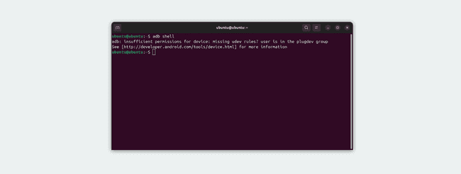
The same error will occur when trying to communicate with the board via ADB commands such as
adb shellClick to expand this section
Understanding the Permission
By default, USB devices on Linux are accessible only by the root user or users in specific groups. When the UNO Q connects to your computer, it creates USB device files, typically in the following directory:
1/dev/bus/usb/That requires write permissions for communication.
The UNO Q supports two USB modes, each with its own USB identifier. In regular operation, the board uses USB VID
23410078When you need to flash the board's firmware, it enters Emergency Download Mode (EDL), which uses USB VID
05c69008Installing Udev Rules
The correct way to configure the necessary permissions for your user account is via udev rules.
udev/dev1# Operating mode2SUBSYSTEMS=="usb", ATTRS{idVendor}=="2341", ATTRS{idProduct}=="0078", MODE="0660", TAG+="uaccess"3# EDL mode4SUBSYSTEMS=="usb", ATTRS{idVendor}=="05c6", ATTRS{idProduct}=="9008", MODE="0660", TAG+="uaccess"Run this command to install the necessary udev rules:
1echo \2'# Operating mode3SUBSYSTEMS=="usb", ATTRS{idVendor}=="2341", ATTRS{idProduct}=="0078", MODE="0660", TAG+="uaccess"4# EDL mode5SUBSYSTEMS=="usb", ATTRS{idVendor}=="05c6", ATTRS{idProduct}=="9008", MODE="0660", TAG+="uaccess"' \6| \7 sudo \8 tee \9 "/etc/udev/rules.d/60-Arduino-UNO-Q.rules" \10&& \11sudo \12 udevadm control \13 --reload-rules \14&& \15sudo \16 udevadm trigger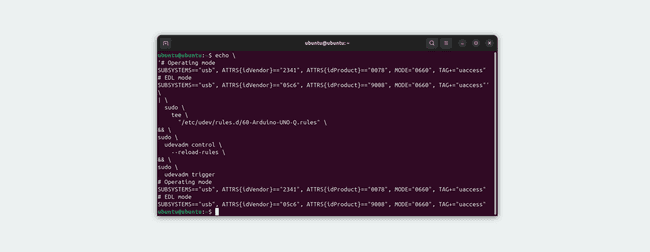
This command performs several operations in sequence. First, it creates the rule file and writes the udev rules to:
1/etc/udev/rules.d/60-Arduino-UNO-Q.rulesThe
60-/etc/udev/rules.d/Each rule matches USB devices based on specific criteria. The
SUBSYSTEMS=="usb"The
ATTRS{idVendor}ATTRS{idProduct}MODE="0660"The
TAG+="uaccess"systemd-logindAfter creating the rule file, the command reloads all udev rules by running as follows:
1udevadm control --reload-rules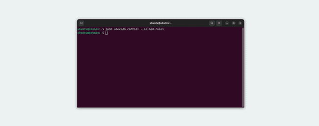
This tells udev to reload all rule files without requiring a system restart.
The
udevadm triggerVerifying the Installation
Using the following command, verify the rules were installed correctly:
1cat /etc/udev/rules.d/60-Arduino-UNO-Q.rules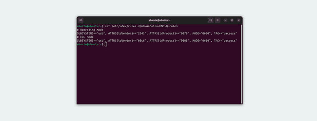
This should display the two udev rules you just installed.
To check if the UNO Q is detected, the following command can be used:
1lsusb | grep -E "2341:0078|05c6:9008"When the board is connected in operating mode, you should see similar to the following output:
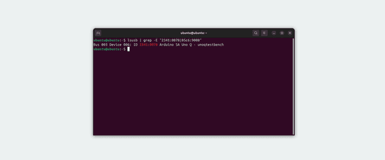
Applying the Changes
After installing the udev rules, you need to disconnect and reconnect your board for the changes to take effect.
Unplug the UNO Q from your computer and wait a few seconds. Then reconnect the board. The new permissions will be applied automatically when the board reconnects.
If you had any applications open when you installed the rules, such as Arduino App Lab or a terminal running ADB commands, you should close and restart them after reconnecting the board. This allows applications to properly detect the board with its new permissions.
For ADB commands, the following commands can be used:
1adb devicesThis command lists all Android Debug Bridge devices connected to your system. Your UNO Q should appear in the list without any error messages.
The following command can be used to access the UNO Q:
1adb shell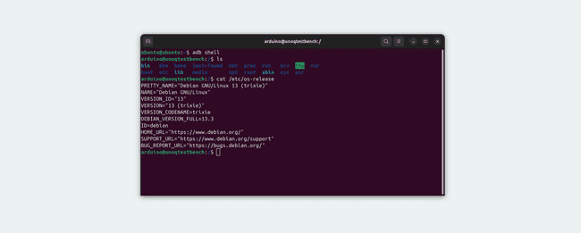
Alternative Installation Method
You can use the official
post-installTo download and run the
post-installwget1cd ~/Downloads1wget https://raw.githubusercontent.com/arduino/ArduinoCore-zephyr/main/post_install.sh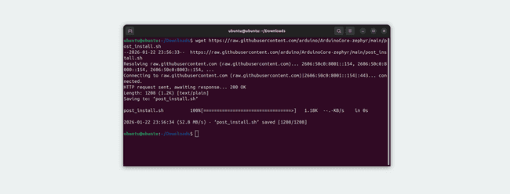
1chmod +x post_install.sh1sudo ./post_install.sh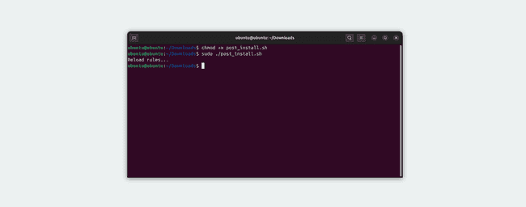
If wget is not available on your system, you can use
curl1cd ~/Downloads1curl -O https://raw.githubusercontent.com/arduino/ArduinoCore-zephyr/main/post_install.sh1chmod +x post_install.sh1sudo ./post_install.sh1sudo ~/.arduino15/packages/arduino/hardware/zephyr/<version>/post_install.shAlternatively, you can clone the entire repository and run the script from there:
1cd ~/Downloads1git clone https://github.com/arduino/ArduinoCore-zephyr.git1cd ArduinoCore-zephyr1chmod +x post_install.sh1sudo ./post_install.shWhen prompted, enter your password. The script will create the udev rules file, reload the udev rules, and apply them to any currently connected devices, just like the manual installation method.
After running the script, you can verify the installation using the same command shown in the manual installation section:
1cat /etc/udev/rules.d/60-arduino-zephyr.rules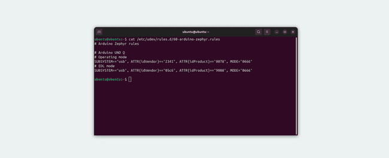
Note that the script creates a file named
60-arduino-zephyr.rules60-Arduino-UNO-Q.rulesAfter installing the udev rules using either method, unplug your UNO Q board from the computer, wait a few seconds, then reconnect it. This allows the new permissions to be applied. Once reconnected, you can continue to the next steps in the Flash a Linux Image tutorial.
Hello World Example
Let’s program the UNO Q with the classic Hello World example typical of the Arduino ecosystem: the Blink sketch. We will use this example to verify that the board is correctly connected to the Arduino App Lab.
Prerequisites:
Arduino UNO Q
USB-C cable
Computer with internet access (PC-hosted mode)
Monitor, keyboard, mouse, and USB-C dongle (single-board computer mode)
Connect the UNO Q to your PC (if you are not in single-board computer mode).
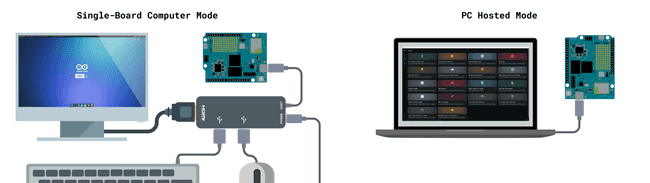
SBC mode and PC-Hosted setup Open the Arduino App Lab, it opens in the Examples section.
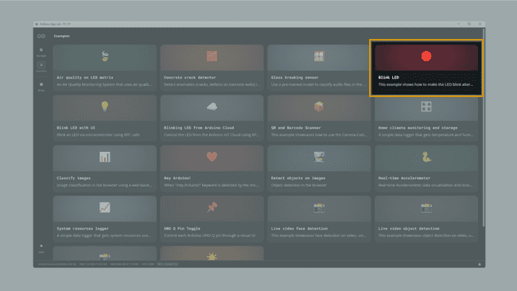
Arduino App Lab Landing Page Open the Blink LED example (Read the example documentation to understand how the App works).
Click on the Run button in the top right corner and wait for the app to be uploaded.
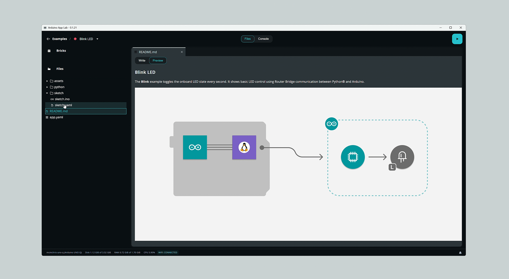
You should now see the red LED of the built-in RGB LED turning on for one second, then off for one second, repeatedly.
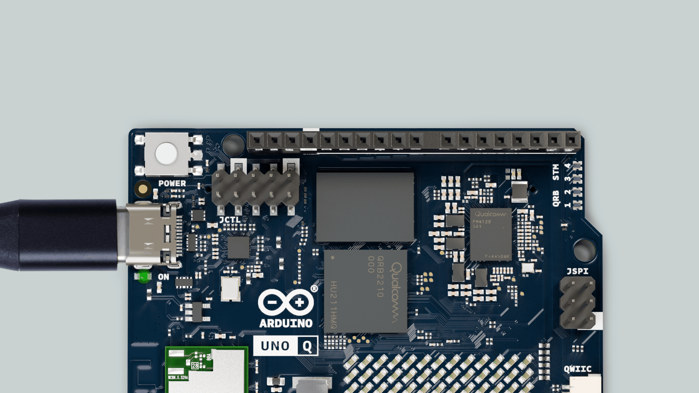
The LED controlled in this example is driven by the STM32 microcontroller through the Arduino sketch.
Running an App at Startup
You can configure a specific App to launch automatically whenever the UNO Q is powered on. This is useful for standalone projects where the board operates without a computer connection.
Note: You cannot set a built-in Example as the startup app directly from the UI. You must first click Copy and edit app from the example or create a new App from scratch.
- Open your custom App (or the copy of an example).
- Locate the Run button in the top right corner.
- Click the arrow (▼) next to the Run button to open the menu.
- Toggle the Run at startup switch to the ON position.
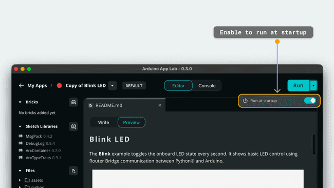
Once configured, a DEFAULT badge will appear next to your App's name, indicating it will run automatically upon boot.
Advanced: Using the CLI
Alternatively, you can set the default app using the command line interface (CLI) inside the UNO Q terminal:
1arduino-app-cli properties set default user:<NAME_OF_YOUR_APP>Arduino IDE (Beta)
The Arduino UNO Q is compatible with the standard Arduino IDE, allowing you to program the board using the familiar Arduino language and ecosystem.
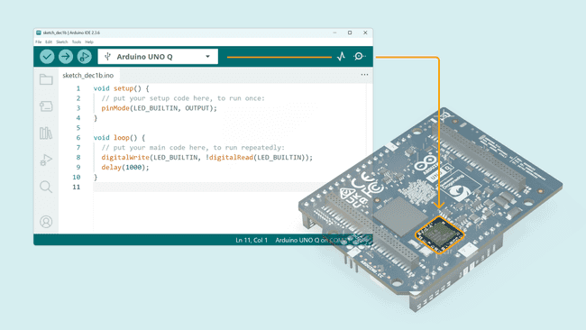
The Arduino UNO Q features a dual-processor architecture. The Arduino IDE targets and programs only the UNO Q Microcontroller (STM32). If you wish to program the Qualcomm Microprocessor, please refer to the Arduino App Lab section.
Installing the UNO Q Core
To start using the board, you must first install the specific core that supports the UNO Q architecture (based on Zephyr).
- Open the Arduino IDE.
- Navigate to Tools > Board > Boards Manager... or click the Boards Manager icon in the left sidebar.
- In the search bar, type
.UNO Q - Locate the Arduino UNO Q Zephyr Core and click Install.
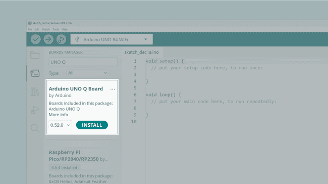
Troubleshooting: If the core does not appear in the search results, you may need to add the package manually. Go to File > Preferences and add the following link to the Additional Boards Manager URLs field: https://downloads.arduino.cc/packages/package_zephyr_index.json
Hello World (Blink)
Once the core is installed, you can verify that everything is working by uploading the classic Blink sketch.
- Select the Board: Go to Tools > Board > Arduino UNO Q Board and select Arduino UNO Q.
- Select the Port: Connect your board via USB-C. Go to Tools > Port and select the port corresponding to your UNO Q.
- Open the Example: Go to File > Examples > 01.Basics > Blink.
- Upload: Click the Upload button (right arrow icon) in the top toolbar.
You can copy it directly from the snippet below:
1void setup() {2 Serial.begin(9600); // We can use 'Serial' again!3 // initialize digital pin LED_BUILTIN as an output.4 pinMode(LED_BUILTIN, OUTPUT);5}6
7// the loop function runs over and over again forever8void loop() {9 digitalWrite(LED_BUILTIN, HIGH); // change state of the LED by setting the pin to the HIGH voltage level10 delay(1000); // wait for a second11 digitalWrite(LED_BUILTIN, LOW); // change state of the LED by setting the pin to the LOW voltage level12 delay(1000); // wait for a second13
14 Serial.println("Hello World");15}The IDE will compile the sketch and upload it to the STM32 microcontroller. You should now see the red LED of the built-in RGB LED turning on for one second, then off for one second, repeatedly.
Also, if you open the Serial Monitor you will see the "Hello World" message!.
Onboard User Interface
The Arduino UNO Q offers a wide range of user interfaces, making interaction intuitive and straightforward.
LED Matrix
One of the board’s key features is an 8×13 blue LED matrix that is managed by the STM32 microcontroller of the UNO Q.
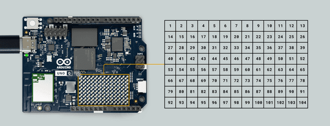
It is a versatile display you can use to show data, status indicators, icons, or even create simple animations and games.
Here is a list of basic examples for using the LED matrix. To test them, follow the steps below:
- Connect the UNO Q to your PC (if you are not in single-board computer mode).
SBC mode and PC-Hosted setup - Open the Arduino App Lab, navigate to My Apps and click on Create new app+.
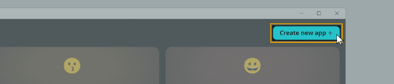
Create a new app - A new App must be created to test each of the examples below.
Image Drawing
This example is for drawing custom frames in the LED matrix, specifically the Arduino logo.
You can copy and paste the following example into the "sketch" part of your new App found in
sketch\sketch.ino1#include <Arduino_LED_Matrix.h>2
3uint8_t logo[104] = {4 0,0,0,0,0,0,0,0,0,0,0,0,0,5 0,0,1,1,1,0,0,0,1,1,1,0,0,6 0,1,0,0,0,1,0,1,0,0,0,1,0,7 1,0,0,0,0,0,1,0,0,1,0,0,1,8 1,0,1,1,1,0,1,0,1,1,1,0,1,9 1,0,0,0,0,0,1,0,0,1,0,0,1,10 0,1,0,0,0,1,0,1,0,0,0,1,0,11 0,0,1,1,1,0,0,0,1,1,1,0,012};13
14Arduino_LED_Matrix matrix;15
16void setup() {17 matrix.begin();18 // display the image19 matrix.setGrayscaleBits(1);20 matrix.draw(logo);21
22}23
24void loop() {25
26}It should look like this in the Arduino App Lab:
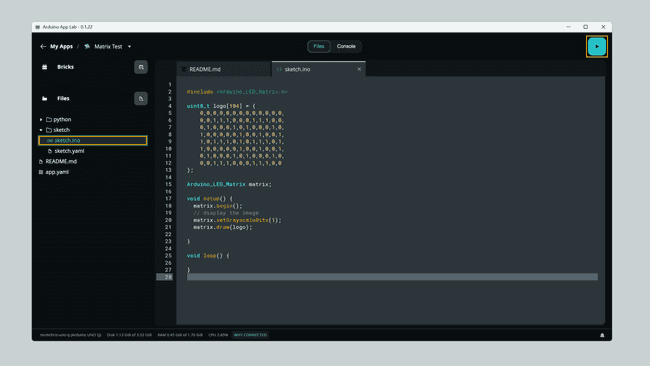
You can create your own frame by creating an array following the matrix format (8x13) with 1's and 0's as in the example from above:
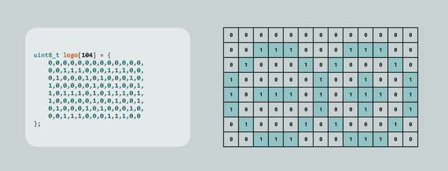
Execute the App by clicking on the Run button in the Arduino App Lab and you should see the LED matrix showing your frame:
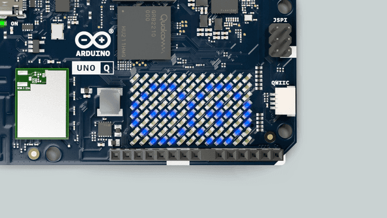
Dimmable LEDs
The LED matrix supports 8 levels of grayscale (3 bits) so you can manage the LED brightness individually.
You can set the brightness bits with the function
setGrayscaleBits(bits)1matrix.setGrayscaleBits(3); // 3 bits result on 8 brightness levels (0 to 7)As usual conversion tools to grayscale uses 256 levels (8 bits) so you can also use this range, and it will be automatically mapped.
1matrix.setGrayscaleBits(8); // 8 bits result on 256 brightness levels (0 to 255)This example is for showing the supported grayscale in the LED matrix.
You can copy and paste the following example into the "sketch" part of your new App found in
sketch\sketch.ino1#include <Arduino_LED_Matrix.h>2
3uint8_t shades[104] = {4 0,0,0,0,0,0,0,0,0,0,0,0,0,5 1,1,1,1,1,1,1,1,1,1,1,1,1,6 2,2,2,2,2,2,2,2,2,2,2,2,2,7 3,3,3,3,3,3,3,3,3,3,3,3,3,8 4,4,4,4,4,4,4,4,4,4,4,4,4,9 5,5,5,5,5,5,5,5,5,5,5,5,5,10 6,6,6,6,6,6,6,6,6,6,6,6,6,11 7,7,7,7,7,7,7,7,7,7,7,7,712};13
14Arduino_LED_Matrix matrix;15
16void setup() {17 matrix.begin();18 // display the image19 matrix.setGrayscaleBits(3);20 matrix.draw(shades);21
22}23
24void loop() {25
26}Execute the App by clicking on the Run button in the Arduino App Lab and you should see the LED matrix showing your frame:
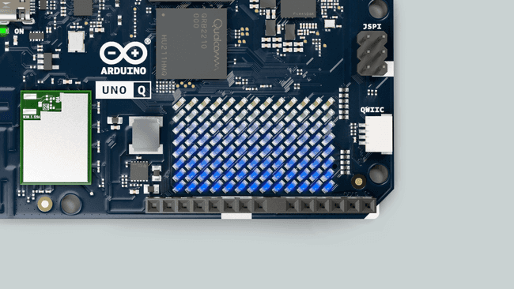
RGB LEDs
The UNO Q features 4x RGB LEDs. Two of them connected and controlled by the Qualcomm microprocessor, and the other two by the STM32 microcontroller.
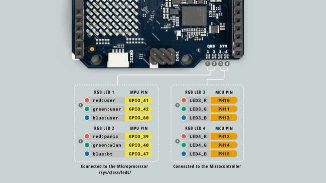
MPU Controlled LEDs
LEDs #1 and #2 are controlled by the MPU.
There is a dedicated LED interface in our Linux OS for controlling these LEDs, they can be controlled via
/sys/class/leds1echo 1 | tee /sys/class/leds/red:user/brightness # set HIGH/ON2echo 0 | tee /sys/class/leds/red:user/brightness # set LOW/OFF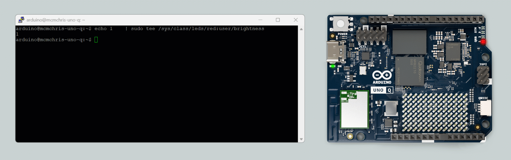
The LED color segments are defined as follows:
LED 1:
- Red:
red:user - Green:
green:user - Blue:
blue:user
LED 2:
- Red:
red:panic - Green:
green:wlan - Blue:
blue:bt
LED 2 is used to show system status:
, PANIC
and WLAN
. But it can be controlled by the user.BT
You can also control these LEDs from a Python script as follows. Remember to create a new App inside Arduino App Lab and then copy and paste the script below in the python section of your App:
1import time2
3from arduino.app_utils import App4
5LED1_R = "/sys/class/leds/red:user/brightness"6LED1_G = "/sys/class/leds/green:user/brightness"7LED1_B = "/sys/class/leds/blue:user/brightness"8
9LED2_R = "/sys/class/leds/red:panic/brightness"10LED2_G = "/sys/class/leds/green:wlan/brightness"11LED2_B = "/sys/class/leds/blue:bt/brightness"12
13def set_led_brightness(led_file, value):14 try:15 with open(led_file, "w") as f:16 f.write(f"{value}\n")17 except Exception as e:18 print(f"Error writing to {led_file}: {e}")19
20# turn off all LEDs21set_led_brightness(LED1_R, 0)22set_led_brightness(LED1_G, 0)23set_led_brightness(LED1_B, 0)24set_led_brightness(LED2_R, 0)25set_led_brightness(LED2_G, 0)26set_led_brightness(LED2_B, 0)27
28def loop():29 #blink the LED 1 RED segment30 set_led_brightness(LED1_R, 1)31 time.sleep(1)32 set_led_brightness(LED1_R, 0)33 time.sleep(1)34
35App.run(user_loop=loop)You can also control these LEDs by using their dedicated Linux module
Leds1# Arguments corresponds to R, G, and B colors respectively2Leds.set_led1_color(1,0,0) # LED 1 in red3Leds.set_led2_color(1,0,0) # LED 2 in redRemember to create a new App inside Arduino App Lab and then copy and paste the script below in the python section of your App:
1import time2from arduino.app_utils import App3from arduino.app_utils import Leds4
5def loop():6 # Blink LED 1 in red7 # Turn on the LED red segment(1, 0, 0)8 Leds.set_led1_color(1,0,0)9 time.sleep(1)10
11 # Turn off the LED (0, 0, 0)12 Leds.set_led1_color(0,0,0)13 time.sleep(1)14
15App.run(user_loop=loop)MCU Controlled LEDs
LEDs #3 and #4 are controlled by the MCU.
They can be controlled by setting the state of their respective GPIOs using the
digitalWriteTo test them follow the steps below:
- Connect the UNO Q to your PC (if you are not in single-board computer mode).
- Open the Arduino App Lab, navigate to My Apps and click on Create new app+.
You can copy and paste the following example into the "sketch" part of your new App found in
sketch\sketch.ino1void setup(){2 // Configure the pins as outputs3 pinMode(LED3_R, OUTPUT);4 pinMode(LED3_G, OUTPUT);5 pinMode(LED3_B, OUTPUT);6 // As they are active low, turn them OFF initially7 digitalWrite(LED3_R, HIGH);8 digitalWrite(LED3_G, HIGH);9 digitalWrite(LED3_B, HIGH);10}11
12void loop(){13 digitalWrite(LED3_R, LOW); // Turn ON red segment14 digitalWrite(LED3_G, HIGH);15 digitalWrite(LED3_B, HIGH);16 delay(1000);17 digitalWrite(LED3_R, HIGH);18 digitalWrite(LED3_G, LOW); // Turn ON green segment19 digitalWrite(LED3_B, HIGH);20 delay(1000);21 digitalWrite(LED3_R, HIGH);22 digitalWrite(LED3_G, HIGH);23 digitalWrite(LED3_B, LOW); // Turn ON blue segment24 delay(1000);25}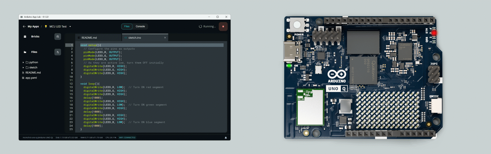
The LED color segments are defined as follows:
LED 3:
- Red:
LED3_R - Green:
LED3_G - Blue:
LED3_B
LED 4:
- Red:
LED4_R - Green:
LED4_G - Blue:
LED4_B
The RGB LEDs are active low, this means they turn ON with logic '0'.
Hardware Debug UART Interface
The UNO Q provides a dedicated low-level UART interface for debugging and system diagnostics. This interface connects directly to the SoC’s main console (TTY), allowing you to observe boot and kernel logs, troubleshoot system issues, or access a shell environment before network services like SSH or ADB are available.
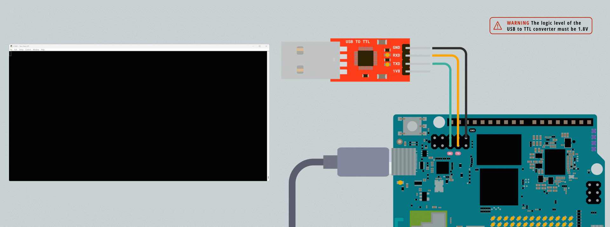
This interface is available through the JCTL connector on the UNO Q. Refer to the pinout section for details, and follow the wiring example above to access it.
WARNING: This interface operates at 1.8 V logic levels and must be used with a compatible USB-to-TTL converter to avoid hardware damage.
Prerequisites
- 1.8V USB to TTL converter (e.g., DSD Tech SH-U09C5)
- USB-C cable to power the UNO Q
- Serial Terminal (e.g., Tera Term)
UART Parameters:
- Baud rate: 115200 bps
- Logic level: 1.8 V
This console provides access to low-level system messages printed by the bootloaders (e.g., SPL and U-Boot), which are not visible through SSH or other high-level interfaces. For example, it allows capturing logs related to power delivery negotiation or hardware initialization during early boot stages, providing information that is otherwise inaccessible.
It can be used to log in to the board and interact with the system through the shell. Use the Linux credentials configured during the board setup process to authenticate.
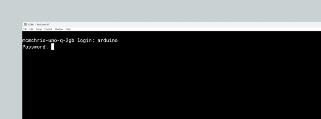
Power Button
The UNO Q features a power button that can be used to reboot the board.
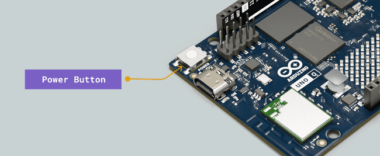
- Long press: the board’s Linux part is rebooted when the button is pressed for 5+ seconds.
You do not need to press the power button for the board to power up, it boots automatically after being powered.
USB-C Connector
The UNO Q features a USB-C connector that can be used for much more than just programming and powering the board.
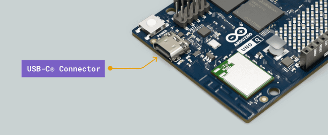
Below is a table with the main features of the USB-C connector that expands the UNO Q capabilities.
| Feature | Description |
|---|---|
| USB Power (Sink) | 5 VDC 3 A (15 W) |
| USB Standard | USB 3.1 Gen 1 (5 Gb/s) |
| Display over USB-C | DisplayPort |
By using a USB-C dongle (adapter/hub) you can also leverage the following features:
| Feature | Description |
|---|---|
| Video Output | HDMI support |
| Video Input | USB camera support |
| Audio | USB or 3.5mm headset (speaker + microphone) |
| Ethernet | Internet through Ethernet supported |
| HID | USB keyboard/mouse and other HID devices |
| Storage | External microSD card or USB drive support |
Pins
The UNO Q is equipped with two connector types: the classic UNO-style headers on the top, designed for prototyping and debugging, guaranteeing full compatibility with Arduino UNO Shields, and the high-speed header connectors on the bottom, purpose-built for integration with UNO Q carriers.
Digital Pins
The UNO Q has 47x digital pins controlled by the STM32 microcontroller, 22x of them exposed through the UNO-styled connector and 25x exposed through JMISC connector mapped as follows:
| Microcontroller Pin | Arduino Pin Mapping | Pin Functionality |
|---|---|---|
| PB7 | D0 / RX | GPIO / UART RX |
| PB6 | D1 / TX | GPIO / UART TX |
| PB3 | D2 | GPIO |
| PB0 | D3 | GPIO / OPAMP OUT |
| PA12 | D4 / FDCAN1_TX | GPIO / CAN Bus TX |
| PA11 | D5 / FDCAN1_RX | GPIO / CAN Bus RX |
| PB1 | D6 | GPIO |
| PB2 | D7 | GPIO |
| PB4 | D8 | GPIO |
| PB8 | D9 | GPIO |
| PB9 | D10 / SS | GPIO / SPI SS |
| PB15 | D11 / MOSI | GPIO / SPI MOSI |
| PB14 | D12 / MISO | GPIO / SPI MISO |
| PB13 | D13 / SCK | GPIO / SPI SCK |
| PA4 | D14 / DAC0 | GPIO / ADC / DAC |
| PA5 | D15 / DAC1 | GPIO / ADC / DAC |
| PA6 | D16 | GPIO / ADC / OPAMP IN + |
| PA7 | D17 | GPIO / ADC / OPAMP IN - |
| PC1 | D18 / SDA2 | GPIO / ADC / I2C SDA |
| PC0 | D19 / SCL2 | GPIO / ADC / I2C SCL |
| PB11 | D20 / SDA | GPIO / I2C SDA |
| PB10 | D21 / SCL | GPIO / I2C SCL |
Notice that pins D14 to D19 also have analog capabilities.
The digital pins of the UNO Q can be used as inputs or outputs through the built-in functions of the Arduino programming language.
The configuration of a digital pin is done in the
setup()pinMode()1// Pin configured as an input2pinMode(pin, INPUT);3// Pin configured as an output4pinMode(pin, OUTPUT);5// Pin configured as an input, internal pull-up resistor enabled6pinMode(pin, INPUT_PULLUP);The state of a digital pin, configured as an input, can be read using the built-in function
digitalRead()1// Read pin state, store value in a state variable2state = digitalRead(pin);The state of a digital pin, configured as an output, can be changed using the built-in function
digitalWrite()1// Set pin on2digitalWrite(pin, HIGH);3// Set pin off4digitalWrite(pin, LOW);The example code shown below uses digital pin
D5D4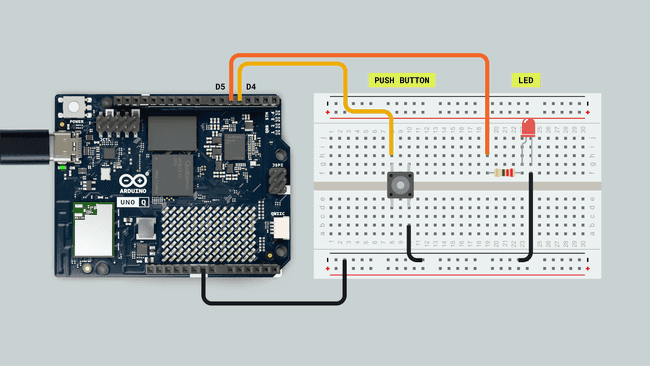
- Create a new App in the Arduino App Lab.
Create a new app - Copy and paste the example below in the "sketch" part of your new App found in
.sketch\sketch.ino
1// Define button and LED pin2int buttonPin = D4;3int ledPin = D5;4
5// Variable to store the button state6int buttonState = 0;7
8void setup() {9 // Configure button and LED pins10 pinMode(buttonPin, INPUT_PULLUP);11 pinMode(ledPin, OUTPUT);12
13 // Initialize Serial communication14 Serial.begin(9600);15}16
17void loop() {18 // Read the state of the button19 buttonState = digitalRead(buttonPin);20
21 // If the button is pressed, turn on the LED and print its state to the Serial Monitor22 if (buttonState == LOW) {23 digitalWrite(ledPin, HIGH);24 Serial.println("- Button is pressed. LED is on.");25 } else {26 // If the button is not pressed, turn off the LED and print to the Serial Monitor27 digitalWrite(ledPin, LOW);28 Serial.println("- Button is not pressed. LED is off.");29 }30
31 // Wait for 1000 milliseconds32 delay(1000);33}Analog Pins
The UNO Q features the well-known analog pins in the JANALOG connector; more details below:
Analog to Digital Converter (ADC)
In the JANALOG connector the UNO Q has 6x 14-bit ADC pins mapped as follows:
| Microcontroller Pin | Arduino Pin Mapping | Pin Functionality |
|---|---|---|
| PA4 | A0 | GPIO / ADC / DAC |
| PA5 | A1 | GPIO / ADC / DAC |
| PA6 | A2 | GPIO / ADC / OPAMP IN + |
| PA7 | A3 | GPIO / ADC / OPAMP IN - |
| PC1 | A4 | GPIO / ADC / I2C SDA |
| PC0 | A5 | GPIO / ADC / I2C SCL |
Analog input pins can be used through the built-in functions of the Arduino programming language.
The UNO Q ADC resolution can be configured between 14, 12, 10, or 8 bits by using the
analogReadResolution(bits)1// ADC resolution set to 14-bit (0 to 16383)2 analogReadResolution(14);The default ADC voltage reference is 3.3V and can be changed by software using the function
analogReference()| Analog Voltage Reference (VREF+) | Argument | Source |
|---|---|---|
| 1.5 V | AR_INTERNAL1V5 | Internal |
| 1.8 V | AR_INTERNAL1V8 | Internal |
| 2.048 V | AR_INTERNAL2V05 | Internal |
| 2.5 V | AR_INTERNAL2V5 | Internal |
| 2 V ~ VDD | AR_EXTERNAL | External |
An external voltage reference can be provided through the AREF pin when
reference is used.AR_EXTERNAL
To set a different analog reference from the default one, see the following example:
1analogReference(AR_INTERNAL2V5);The example code shown below reads the analog input value from a potentiometer connected to
A0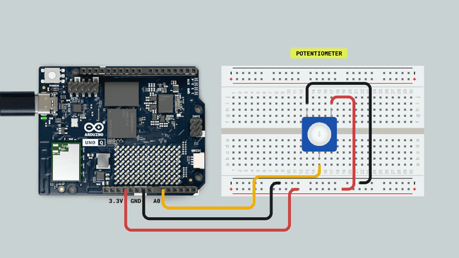
- Create a new App in the Arduino App Lab.
Create a new app - Copy and paste the example below in the "sketch" part of your new App found in
.sketch\sketch.ino
1int sensorPin = A0; // select the input pin for the potentiometer2
3int sensorValue = 0; // variable to store the value coming from the sensor4
5void setup() {6 Serial.begin(9600);7}8
9void loop() {10 // read the value from the sensor:11 sensorValue = analogRead(sensorPin);12
13 Serial.println(sensorValue);14 delay(100);15}Digital to Analog Converter (DAC)
The UNO Q has two DAC outputs, mapped as follows:
| Microcontroller Pin | Arduino Pin Mapping | Pin Functionality |
|---|---|---|
| PA4 | DAC0 | GPIO / ADC / DAC |
| PA5 | DAC1 | GPIO / ADC / DAC |
The digital-to-analog converters of the UNO Q can be used to output analog voltages through the built-in functions of the Arduino programming language.
The DAC output resolution can be configured from 8 to 12 bits using the
analogWriteResolution()1// DAC resolution set to 12-bit (0 to 4095)2analogWriteResolution(12); // enter the desired resolution in bits (8, 10, 12)To output an analog voltage value through a DAC pin, use the
analogWrite()1analogWrite(DAC0, value); // the value should be in the range of the DAC resolution (e.g. 0-4095 with a 12 bits resolution)If a normal GPIO is passed to the
function, the output will be a PWM signal.analogWrite()
The following sketch will create a 60 Hz sine wave signal in the
A0/DAC0Create a new App in the Arduino App Lab.
Create a new app Copy and paste the example below in the "sketch" part of your new App found in
.sketch\sketch.ino
1const float freq = 60.0f;2const int N = 256; // 256 samples/cycle3const uint32_t Ts_us = (uint32_t)llroundf(1e6f / (freq * N));4
5uint16_t lut[N]; // store the sine wave here6
7void setup() {8 analogWriteResolution(12);9
10 for (int i = 0; i < N; ++i){11 lut[i] = 2048 + (1000.0 * sin(2 * PI * i / N));12 }13
14}15
16void loop() {17 static uint32_t t_next = micros();18 for (int i = 0; i < N; ++i) {19 analogWrite(DAC0, lut[i]); // output the sine wave values20 t_next += Ts_us;21 while ((int32_t)(micros() - t_next) < 0) { /* spin */ }22 }23}The DAC output should look like the image below:
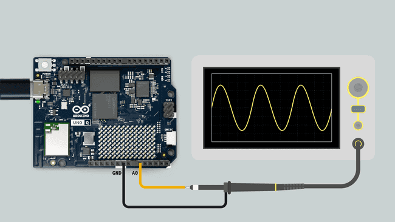
PWM Pins
The UNO Q has 6x PWM (Pulse Width Modulation) pins, mapped as follows:
| Microcontroller Pin | Arduino Pin Mapping | Pin Functionality |
|---|---|---|
| PB0 | D3 | GPIO / OPAMP OUT / PWM |
| PA11 | D5 / FDCAN1_RX | GPIO / CAN Bus RX / PWM |
| PB1 | D6 | GPIO / PWM |
| PB8 | D9 | GPIO / PWM |
| PB9 | D10 / SS | GPIO / SPI SS / PWM |
| PB15 | D11 / MOSI | GPIO / SPI MOSI / PWM |
This functionality can be used with the built-in function
analogWrite()1analogWrite(pin, value);By default, the output resolution is 8 bits, so the output value should be between 0 and 255. To set a greater resolution, do it using the built-in function
analogWriteResolution1// PWM resolution set to 10-bit (0 to 4095)2analogWriteResolution(10);Here is an example of how to create a variable duty-cycle PWM signal:
Create a new App in the Arduino App Lab.
Create a new app Copy and paste the example below in the "sketch" part of your new App found in
.sketch\sketch.ino
1const int analogInPin = A0; // Analog input pin that the potentiometer is attached to2const int pwmOutPin = D3; // PWM output pin3
4int sensorValue = 0; // value read from the pot5int outputValue = 0; // value output to the PWM (analog out)6
7void setup() {8 // Define the PWM output resolution9 analogWriteResolution(10); // 0 - 1023 -> 0 - 100% duty-cycle10 analogReadResolution(14); // 0 - 1638311}12
13void loop() {14 // read the analog in value:15 sensorValue = analogRead(analogInPin);16 // map it to the range of the analog out:17 outputValue = map(sensorValue, 0, 16383, 0, 1024);18 // change the analog out value:19 analogWrite(pwmOutPin, outputValue);20
21 // wait 2 milliseconds before the next loop for the ADC22 // to settle after the last reading:23 delay(2);24}Now you can control the PWM signal duty-cycle by turning the potentiometer.
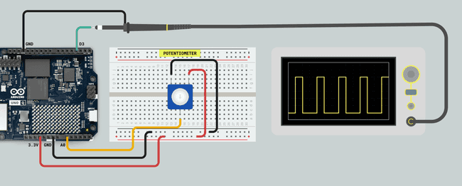
PWM frequency is fixed to 500 Hz.
Communication
This section of the user manual covers the different communication protocols that are supported by the Arduino UNO Q.
Bridge - Remote Procedure Call (RPC) Library
The Arduino UNO Q uses RPC (Remote Procedure Call) to exchange data between the Linux (Qualcomm MPU) side and the real-time STM32 MCU. This mechanism allows functions running on one processor to be invoked transparently from the other, as if they were local calls.
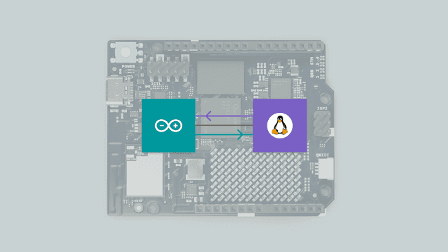
Overview
The
BridgeArduino_RPClite- MPU side (Qualcomm QRB, Linux): Runs higher-level services and can remotely invoke MCU functions.
- MCU side (STM32, Zephyr RTOS): Handles time-critical tasks and exposes functions to the MPU via RPC.
The Arduino Router (Infrastructure)
Under the hood, the communication is managed by a background Linux service called the Arduino Router (
arduino-routerWhile the
BridgeKey Features:
Multipoint Communication: Unlike simple serial communication (which is typically point-to-point), the Router allows multiple Linux processes to communicate with the MCU simultaneously (and with each other).
Linux ↔ MCU: Multiple Linux processes can interact with the MCU simultaneously (e.g., a Python® script reading sensors while a separate C++ application commands motors).
Linux ↔ Linux: You can use the Router to bridge different applications running on the MPU. For example, a Python script can expose an RPC function that another Python® or C++ application calls directly, allowing services to exchange data without involving the MCU at all.
Service Discovery: Clients (like your Python® script or the MCU Sketch) "register" functions they want to expose. The Router keeps a directory of these functions and routes calls to the correct destination.
Source Code:
System Configuration & Hardware Interfaces
The Router manages the physical connection between the two processors. It is important to know which hardware resources are claimed by the Router to avoid conflicts in your own applications.
- Linux Side (MPU): The router claims the serial device
./dev/ttyHS1 - MCU Side (STM32): The router claims the hardware serial port
.Serial1
⚠️ WARNING: Reserved Resources Do not attempt to open
(on Linux) or/dev/ttyHS1(on Arduino/Zephyr) in your own code. These interfaces are exclusively locked by theSerial1service. Attempting to access them directly will cause the Bridge to fail.arduino-router
Managing the Router Service
The arduino-router runs automatically as a system service. In most cases, you do not need to interact with it directly. However, if you are debugging advanced issues or need to restart the communication stack, you can control it via the Linux terminal:
Check Status To see if the router is running and connected:
1systemctl status arduino-routerRestart the Service If the communication seems stuck, you can restart the router without rebooting the board:
1sudo systemctl restart arduino-routerView Logs To view the real-time logs for debugging (e.g., to see if RPC messages are being rejected or if a client has disconnected):
1journalctl -u arduino-router -fTo capture more detailed information in the logs, you can append the
--verboseOpen the service file for editing:
1sudo nano /etc/systemd/system/arduino-router.serviceLocate the line beginning with
and appendExecStart=
to the end of the command. The updated service file should look like this:--verbose1[Unit]2Description=Arduino Router Service3After=network-online.target4Wants=network-online.target5Requires=67[Service]8# Put the micro in a ready state.9ExecStartPre=-/usr/bin/gpioset -c /dev/gpiochip1 -t0 37=010ExecStart=/usr/bin/arduino-router --unix-port /var/run/arduino-router.sock --serial-port /dev/ttyHS1 --serial-baudrate 115200 --verbose # <--- ADD THIS11# End the boot animation after the router is started.12ExecStartPost=/usr/bin/gpioset -c /dev/gpiochip1 -t0 70=113StandardOutput=journal14StandardError=journal15Restart=always16RestartSec=31718[Install]19WantedBy=multi-user.targetYou must reload the systemd daemon for the configuration changes to take effect.
1sudo systemctl daemon-reloadRestart the Router:
1sudo systemctl restart arduino-routerView the verbose logs:
1journalctl -u arduino-router -f
Core Components
BridgeClass
: Initializes the bridge and the internal serial transport.begin()
: Invokes a function on the Linux side and waits for a result.call(method, args...)
: Invokes a function on the Linux side without waiting for a response (fire-and-forget).notify(method, args...)
: Exposes a local MCU function to Linux. Note: The function executes in the high-priority background RPC thread. Keep these functions short and thread-safe.provide(name, function)
: Exposes a local MCU function, but ensures it executes within the mainprovide_safe(name, function)
context. Use this if your function interacts with standard Arduino APIs (likeloop()
ordigitalWrite
) to avoid concurrency crashes.Serial
Warning: Do not use
, Bridge.call()
or Monitor.print()
inside Serial.print()
functions. Initiating a new communication while responding to one causes system deadlocks.provide()
RpcCall- Helper class representing an asynchronous RPC. If its
method is invoked, it waits for the response, extracts the return value, and propagates error codes if needed..result
Monitor- The library includes a pre-defined Monitor object. This allows the Linux side to send text streams to the MCU (acting like a virtual Serial Monitor) via the RPC method mon/write.
Threading and Safety
- The bridge uses Zephyr mutexes (
) to guarantee safe concurrent access when reading/writing over the transport. Updates are handled by a background thread that continuously polls for requests.k_mutex - Incoming Updates: Handled by a dedicated background thread (
) that continuously polls for requests.updateEntryPoint - Safe Execution: The provide_safe mechanism hooks into the main loop (
) to execute user callbacks safely when the processor is idle.__loopHook
Usage Example (Arduino App Lab)
This example shows the Linux side (Qualcomm QRB) toggling an LED on the MCU (STM32) by calling a remote function over the Bridge.
Create a new App in the Arduino App Lab.
Create a new app Copy and paste the example below in the "Python" and "sketch" parts of your new App found in
andpython\main.py
respectivelys.sketch\sketch.ino
Linux (QRB) example to call a remote MCU function
This Python script runs on the QRB and calls an MCU-exposed RPC named
once per second:set_led_state1# main.py (QRB side)2from arduino.app_utils import *3import time45led_state = False67def loop():8 global led_state9 time.sleep(1)10 led_state = not led_state11 Bridge.call("set_led_state", led_state)1213App.run(user_loop=loop)This sends a boolean to the MCU every second using
Bridge.call("set_led_state", <bool>)MCU (STM32) setup to include the Bridge and start it
This sketch includes the Bridge library and configures the LED pin.
1#include "Arduino_RouterBridge.h"23void setup() {4 pinMode(LED_BUILTIN, OUTPUT);56 Bridge.begin();7 Bridge.provide("set_led_state", set_led_state);8}910void loop() {11}1213void set_led_state(bool state) {14 // LOW state means LED is ON15 digitalWrite(LED_BUILTIN, state ? LOW : HIGH);16}This registers the local MCU function
as an RPC service namedset_led_state
, so that the Linux (QRB) side can call it remotely as if it were a local function using"set_led_state"Bridge.provide("set_led_state", set_led_state);
You can do the same the other way around, Python functions can be provided to the MCU sketch to be used locally.
After pasting the Python script into your App’s Python file and the Arduino code to the sketch, you can run the App and observe LED #3 blinking in red every second.
There are more advanced methods in the Bridge RPC library that you can discover by testing our different built-in examples inside Arduino App Lab.
Interacting via Unix Socket (Advanced)
Linux processes communicate with the Router using a Unix Domain Socket located at:
/var/run/arduino-router.sockWhile the
BridgeUsage Example (Custom Python Client)
The following example demonstrates how to control an MCU function (
set_led_statemsgpackPrerequisites:
Flash the MCU Sketch
Upload the following code using the Arduino IDE or Arduino App Lab. This registers the function we want to call.
1#include "Arduino_RouterBridge.h"23void setup() {4 pinMode(LED_BUILTIN, OUTPUT);56 Bridge.begin();7 // We use provide_safe to ensure the hardware call runs in the main loop context8 Bridge.provide_safe("set_led_state", set_led_state);9}1011void loop() {12}1314void set_led_state(bool state) {15 digitalWrite(LED_BUILTIN, state ? LOW : HIGH);16}Install the Python Dependency
Install the msgpack library using the system package manager:
1sudo apt install python3-msgpackCreate the Python Script
Create a new file named msgpack_test.py:
1nano msgpack_test.pyAdd the Script Content
Copy and paste the following code. This script connects manually to the Router's Unix socket and sends a raw RPC request.
1import socket2import msgpack3import sys45# 1. Define the connection to the Router's Unix Socket6SOCKET_PATH = "/var/run/arduino-router.sock"78# 2. Parse command line arguments9# Default to turning LED ON (True) if no argument is provided10led_state = True1112if len(sys.argv) > 1:13 arg = sys.argv[1]14 if arg == "1":15 led_state = True16 elif arg == "0":17 led_state = False18 else:19 print("Usage: python3 msgpack_test.py [1|0]")20 sys.exit(1)2122print(f"Sending request to set LED: {led_state}")2324# 3. Create the MessagePack RPC Request25# Format: [type=0 (Request), msgid=1, method="set_led_state", params=[led_state]]26request = [0, 1, "set_led_state", [led_state]]27packed_req = msgpack.packb(request)2829# 4. Send the request30try:31 with socket.socket(socket.AF_UNIX, socket.SOCK_STREAM) as client:32 client.connect(SOCKET_PATH)33 client.sendall(packed_req)3435 # 5. Receive the response36 response_data = client.recv(1024)37 response = msgpack.unpackb(response_data)3839 # Response Format: [type=1 (Response), msgid=1, error=None, result=None]40 print(f"Router Response: {response}")4142except Exception as e:43 print(f"Connection failed: {e}")
Running the Example
You can now test the connection by running the script from the terminal and passing
101python3 msgpack_test.py 1 # to turn on the LED2# or3python3 msgpack_test.py 0 # to turn off the LED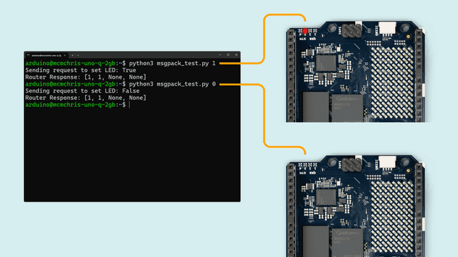
SPI
The UNO Q supports SPI communication, which allows data transmission between the board and other SPI-compatible devices.
The pins used in the UNO Q for the SPI communication protocol are the following:
| Microcontroller Pin | Arduino Pin Mapping |
|---|---|
| PB9 | SS / D10 |
| PB15 | MOSI / D11 |
| PB14 | MISO / D12 |
| PB13 | SCK / D13 |
Please, refer to the board pinout section of the user manual to locate them on the board.
Include the
SPI1#include <SPI.h>In the
setup()SS1#define SS D102
3void setup() {4 // Set the chip select pin as output5 pinMode(SS, OUTPUT);6
7 // Pull the SS pin HIGH to unselect the device8 digitalWrite(SS, HIGH);9
10 // Initialize the SPI communication11 SPI.begin();12}To transmit data to an SPI-compatible device, you can use the commands used in the following example:
Create a new App in the Arduino App Lab.
Create a new app Copy and paste the example below in the "sketch" part of your new App found in
.sketch\sketch.ino
1#include <SPI.h>2
3#define SS D104
5void setup() {6 // Set the chip select pin as output7 pinMode(SS, OUTPUT);8
9 // Pull the SS pin HIGH to unselect the device initially10 digitalWrite(SS, HIGH);11
12 // Initialize the SPI hardware pins13 SPI.begin();14}15
16void loop() {17 // Replace with the target device’s address18 byte address = 0x35;19 // Replace with the value to send20 byte value = 0xFA;21
22 // 1. Begin transaction (Configure speed, data order, and mode)23 // We use 1 MHz (1000000) for broad compatibility and easy logic analysis24 SPI.beginTransaction(SPISettings(1000000, MSBFIRST, SPI_MODE0));25
26 // 2. Pull the SS pin LOW to select the device27 digitalWrite(SS, LOW);28
29 // 3. Send the data30 SPI.transfer(address);31 SPI.transfer(value);32
33 // 4. Pull the SS pin HIGH to unselect the device34 digitalWrite(SS, HIGH);35
36 // 5. End the transaction37 SPI.endTransaction();38
39 delay(2000);40}The example code above should output this:
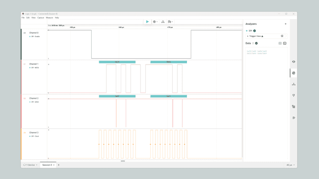
I2C
The UNO Q supports I2C communication, which allows data transmission between the board and other I2C-compatible devices. The pins used in the UNO Q for the I2C communication protocol are the following:
| Microcontroller Pin | Arduino Pin Mapping (Wire) | Microcontroller Pin | Arduino Pin Mapping (Wire1) |
|---|---|---|---|
| PB10 | SCL / D21 | PD12 | I2C4_SCL (Qwiic) |
| PB11 | SDA / D20 | PD13 | I2C4_SDA (Qwiic) |
Please, refer to the board pinout section of the user manual to locate them on the board.
To use I2C communication, include the
WireWire1#include <Wire.h>In the
setup()1// Initialize the I2C communication2Wire.begin(); // I2C in UNO-style headers (D20, D21)3// or4Wire1.begin(); // I2C in Qwiic connectorTo transmit data to an I2C-compatible device, you can use the commands used in the following example:
Create a new App in the Arduino App Lab.
Create a new app Copy and paste the example below in the "sketch" part of your new App found in
.sketch\sketch.ino
1#include <Wire.h>2
3void setup() {4 // Initialize the I2C communication5 Wire.begin();6}7
8void loop() {9 // Replace with the target device’s I2C address10 byte deviceAddress = 0x35;11 // Replace with the appropriate instruction byte12 byte instruction = 0x00;13 // Replace with the value to send14 byte value = 0xFA;15 // Begin transmission to the target device16 Wire.beginTransmission(deviceAddress);17 // Send the instruction byte18 Wire.write(instruction);19 // Send the value20 Wire.write(value);21 // End transmission22 Wire.endTransmission();23
24 delay(2000);25}The example code above should output this:
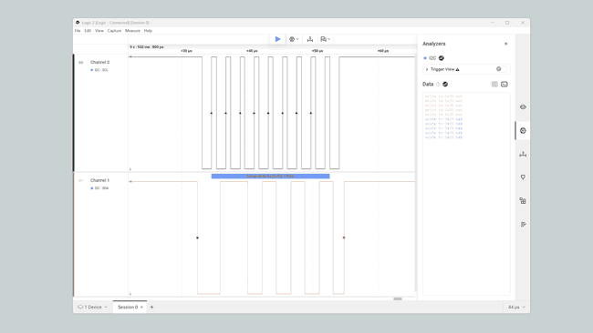
Qwiic
The Arduino UNO Q features an onboard Qwiic connector that provides a simple, tool-free solution for connecting I²C devices. The Qwiic ecosystem, developed by SparkFun Electronics, has become an industry standard for rapid prototyping with I²C devices, allowing you to connect sensors, displays, and other peripherals without soldering or complex wiring.
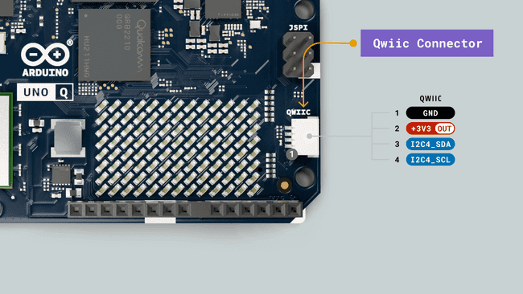
The Qwiic system’s key advantages include:
- Plug-and-play connectivity: No breadboards, jumper wires, or soldering required
- Polarized connectors: Prevents accidental reverse connections
- Daisy-chain capability: Connect multiple devices in series
- Built-in pull-up resistors: No external resistors needed
- Standard pinout: Compatible across all Qwiic ecosystem devices
The Qwiic connector on the UNO Q is connected to the secondary I2C bus (I2C4), which uses the
object rather than the Wire1
object. Please note that the Qwiic connector is 3.3 V only.Wire
The Qwiic connector allows you to interface our Modulino nodes for developing soldering-free projects.
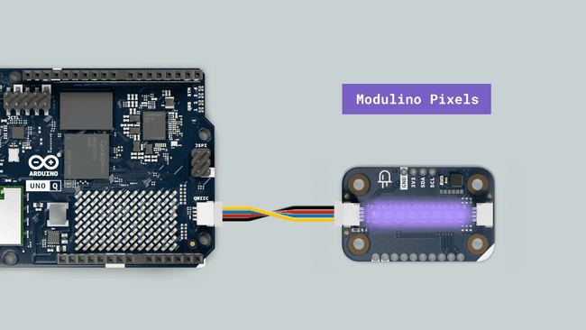
You can check our Modulino family where you will find a variety of sensors and actuators to expand your projects.
UART
The pins used in the UNO Q for the UART communication protocol are the following:
| Microcontroller Pin | Arduino Pin Mapping |
|---|---|
| PB6 | USART1_TX / D1 |
| PB7 | USART1_RX / D0 |
Please, refer to the board pinout section of the user manual to locate them on the board.
To communicate over the hardware serial pins on the JDIGITAL connector, the
object must be used.Serial1
To begin with UART communication, you will need to configure it first. In the
setup()1// Start UART communication at 115200 baud2Serial1.begin(115200);To transmit data to another device via UART, you can use the
write()1// Transmit the string "Hello UNO Q"2Serial1.write("Hello UNO Q");3Serial1.write("\r\n"); // new lineYou can also use the
printprintln()1// Transmit the string "Hello UNO Q"2Serial1.print("Hello UNO Q");3
4// Transmit the string "Hello UNO Q" followed by a newline character5Serial1.println("Hello UNO Q");To test the UART transmit method use the following example, remember to create a new App in the Arduino App Lab, then copy and paste the example below:
1void setup() {2 // Initialize the hardware UART at 115200 bps3 Serial1.begin(115200);4}5
6void loop() {7 // Transmit the string "Hello UNO Q" followed by a newline character8 Serial1.println("Hello UNO Q");9 delay(1000);10}You should get the following in the TX and RX pins of your UNO Q board, I am using a logic analyzer to capture the data:
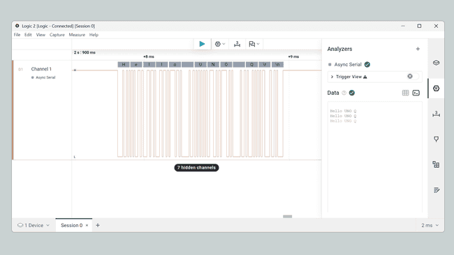
To read incoming data, you can use a
while()1String incoming = "";2
3void setup() {4 // Initialize the hardware UART at 115200 baud5 Serial1.begin(115200);6}7
8void loop() {9 while (Serial1.available()) {10 char c = Serial1.read();11
12 if (c == '\n') {13 // Echo the buffered message and add a newline14 Serial1.println(incoming);15
16 // Clear for the next message17 incoming = "";18 } else {19 incoming += c;20 }21 }22}With this example the UNO Q will send back whatever it receives on the UART.
From Serial to Monitor
Starting with version 0.55.0 of the Arduino UNO Q Board platform, the UNO Q fully supports legacy
SerialSerial.print()Serial.println()1void setup() {2 // Initialize the Monitor3 Serial.begin(9600);4}5
6void loop() {7 // Transmit the string "Hello UNO Q" followed by a newline character8 Serial.println("Hello UNO Q");9 delay(1000);10}Because of the UNO Q's architecture, earlier versions of the Arduino UNO Q Board platform required a specific
MonitorSerialFor backward compatibility, the
MonitorArduino_RouterBridge1#include <Arduino_RouterBridge.h>2
3void setup() {4 // Initialize the legacy Monitor5 Monitor.begin(9600);6}7
8void loop() {9 Monitor.println("This still works!");10 delay(1000);11}While
is still supported, we recommend using standard Monitor
for all new projects.Serial
Wireless Connectivity
The UNO Q features the WCBN3536A radio module that provides dual-band Wi-Fi® 5 (2.4/5 GHz) and Bluetooth® 5.1 to the board. This allows seamless wireless connectivity for both IoT and peripheral communication.
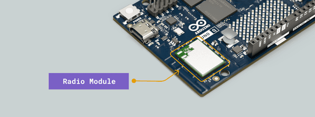
Whether connecting to a local network, uploading data to the cloud, or communicating with Bluetooth-enabled devices such as smartphones and sensors, the UNO Q offers flexible and reliable options for your projects.
Wi-Fi®
Wi-Fi connectivity on the UNO Q allows the board to connect to local networks or the internet to access online services, perform software updates, and communicate with remote servers. Additionally, Wi-Fi can be configured to share its internet connection with the onboard microcontroller, allowing both systems to stay connected without additional network hardware.
From the Microprocessor
If you followed the Arduino App Lab first set up, you should be already connected to the internet. However, here is a brief explanation of how to do it manually.
To connect the UNO Q to the internet, simply go to the upper-right corner and click on the network icon. Then, search for available Wi-Fi® networks and select one.
Or run the following command in the terminal:
1sudo nmcli d wifi connect <SSID> password <YOUR_PASSWORD>To disconnect the UNO Q from the current Wi-Fi network, go to the same place where you enabled it before, click on the network icon in the upper-right corner, and then click on "Disconnect".
Or run the following command in the terminal:
1sudo nmcli d disconnect wlan0
is the typical name of the Wi-Fi interface, you can verify yours running wlan0
in the terminal.nmcli device
If you want to forget the saved network so it doesn’t auto-connect again, you can also run:
1sudo nmcli connection delete <SSID>WPA2-Enterprise Connections
To connect to a WPA2-Enterprise network, you need to provide additional authentication configuration. The possible configurations can be complex; please refer to the official documentation for a comprehensive list of options.
For example, here is the configuration for Eduroam, an international Wi-Fi roaming service for users in research and education.
1nmcli con add \2 type wifi \3 connection.id Eduroam \ # Connection name4 wifi.ssid eduroam \ # Network Wi-Fi SSID5 wifi.mode infrastructure \6 wifi-sec.key-mgmt wpa-eap \7 802-1x.eap peap \8 802-1x.phase2-auth mschapv2 \9 802-1x.identity <your identity>Here's another example using TTLS authentication with PAP:
1nmcli con add \2 type wifi \3 connection.id ExampleNetwork \ # Connection name4 wifi.ssid <your Wi-Fi SSID> \ # Network Wi-Fi SSID5 wifi.mode infrastructure \6 wifi-sec.key-mgmt wpa-eap \7 802-1x.eap ttls \8 802-1x.phase2-auth pap \9 802-1x.domain-suffix-match example.com \10 802-1x.identity <your identity>If you prefer not to store your password in plain text (especially when it contains special characters), you can use the
--ask1nmcli --ask con up <your network name>From the Microcontroller
Since the radio module is connected to the Qualcomm microprocessor, we need the Bridge to expose the connectivity to the microcontroller.
The following example gets the UTC time using TCP over socket RPC calls and prints it in the Serial Monitor:
- Create a new App in the Arduino App Lab.
Create a new app - Copy and paste the example below in the "sketch" part of your new App found in
.sketch\sketch.ino
1BridgeTCPClient<> client(Bridge);2
3void setup() {4 if (!Bridge.begin()) {5 while (true) {}6 }7
8 Serial.begin(9600);9
10 Serial.println("TCP Daytime Demo started");11}12
13void loop() {14 Serial.println("\nConnecting to time.nist.gov ...");15
16 if (client.connect("time.nist.gov", 13) < 0) {17 Serial.println("Connection failed!");18 delay(5000);19 return;20 }21
22 Serial.println("Connected, reading response...");23 String line;24 while (client.connected() || client.available()) {25 if (client.available()) {26 char c = client.read();27 if (c == '\n') break; // daytime sends one line28 if (c != '\r') line += c;29 }30 }31
32 Serial.print("Server says: ");33 Serial.println(line);34
35 client.stop();36 delay(10000);37}Once running, open the Arduino App Lab Serial Monitor and you will see the time and date retrieved from the
time.nist.govBluetooth®
Bluetooth® connectivity allows the UNO Q to communicate with nearby devices such as smartphones, computers, or sensors. It can be used for data exchange, remote control, or connecting to Bluetooth® peripherals like keyboards, headsets and serial devices. Depending on the setup, the UNO Q can act as either a Bluetooth® peripheral or host, enabling flexible short-range communication for various applications.
You can leverage the Bluetooth® feature from the Single-Board Computer mode by clicking on the upper-right Bluetooth icon to manage it.
From here, you can do the following:
- Scan for devices
- Pair to a specific device
- Trust devices
- Send files
- Turn on or off the Bluetooth connection
You can also manage the Bluetooth connection from the terminal by using
bluetoothctl1bluetoothctl power on # turn on Bluetooth2bluetoothctl power off # turn off BluetoothYou can enter the Bluetooth manager prompt by running
bluetoothctl1power on # turn on Bluetooth2power off # turn off Bluetooth3scan on # start searching for nearby Bluetooth devices4scan off # stop searching for devices5connect <MAC_ADDRESS> # pair to the device with the specified MAC addressHere is an example of how looks like to search for Bluetooth devices from the terminal:
Manage the Linux Operating System
The Arduino UNO Q runs a full Debian Linux operating system, allowing you to interact with the system just like any standard Linux environment. For convenience, Arduino App Lab provides integrated tools to help you manage updates, configure your board, and flash new operating system images.
The following sections outline how to work with the Debian environment and how to manage or flash the Linux system image.
Working with the Debian Environment
The UNO Q runs a full Debian Linux operating system, providing a powerful environment for running Python scripts, managing network services, and installing thousands of open-source packages.
To learn how to access the shell, navigate the file system, manage permissions, and use the built-in system tools, please refer to the comprehensive Debian Linux Basics for UNO Q guide.
Flashing a Linux Image
If you need to reset the board to its factory state, recover from system corruption, or switch to a different Linux distribution, you can flash a new system image using one of two tools:
- Arduino App Lab: If your board is functional and recognized by your computer, you can initiate a reset or switch distributions directly from the Settings menu. This method allows you to preserve your user data if desired.
- Arduino Flasher CLI: If your board is unresponsive or cannot be discovered on your network, use this standalone command-line tool to reinstall the OS.
For detailed instructions on both methods, please refer to the Flash a Linux Image tutorial.
Support
If you encounter any issues or have questions while working with the Arduino UNO Q, we provide various support resources to help you find answers and solutions.
Help Center
Explore our Help Center, which offers a comprehensive collection of articles and guides for the UNO Q. The Arduino Help Center is designed to provide in-depth technical assistance and help you make the most of your device.
Forum
Join our community forum to connect with other UNO Q users, share your experiences, and ask questions. The forum is an excellent place to learn from others, discuss issues, and discover new ideas and projects related to the UNO Q.
Contact Us
Please get in touch with our support team if you need personalized assistance or have questions not covered by the help and support resources described before. We are happy to help you with any issues or inquiries about the UNO Q.
Suggest changes
The content on docs.arduino.cc is facilitated through a public GitHub repository. If you see anything wrong, you can edit this page here.
License & Trademark
The Arduino documentation is licensed under the Creative Commons Attribution-Share Alike 4.0 license.
Arduino and the Arduino logo are trademarks or registered trademarks of Arduino S.r.l.